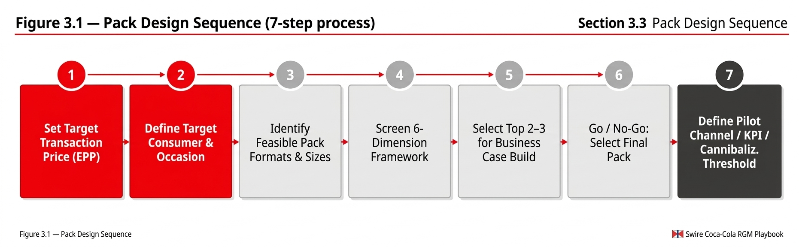

Chapter 05
Chapter 3 Pack Design Framework
Pack design for Recruitment and Affordability purposes is an evidence-based process governed by six dimensions of evaluation. The three most common design errors are: (1) starting from an existing pack and applying a price reduction without changing the format; (2) designing from a production-cost perspective rather than a consumer-transaction perspective; (3) optimizing for one dimension (e.g., Consumer Fit) while neglecting others (e.g., Operational Fit or Economic Fit).

Playbook Chapter
Chapter 3 Pack Design Framework
3.1 Design Principles
Pack design for Recruitment and Affordability purposes is an evidence-based process governed by six dimensions of evaluation. The three most common design errors are: (1) starting from an existing pack and applying a price reduction without changing the format; (2) designing from a production-cost perspective rather than a consumer-transaction perspective; (3) optimizing for one dimension (e.g., Consumer Fit) while neglecting others (e.g., Operational Fit or Economic Fit).
Taiwan's CVS Mini CAN recruitment proposal (2025) exemplifies this principle: the team started with the observation that 55% of ambient sweetened tea in CVS sells at or below NT$20, established this as the Magic Price Point for the target young consumer segment, and then designed backward to a 200ml format that could be delivered at NT$13.5 average price with acceptable Swire margin and customer economics.
3.2 The Six-Dimension Evaluation Framework
Dimension | Key Questions | Minimum Standard for Launch Approval |
|---|---|---|
Consumer Fit | Does the pack size match the target consumer's typical consumption occasion? Does the price point sit at or below the EPP for the target segment? Does consumer research confirm willingness to trial? | Conjoint or validated consumer research showing ≥20% trial intent among target non-buyers or lapsed buyers at the proposed EPP. |
Occasion Fit | Is the pack designed for a specific, identifiable consumption occasion? Does the format (e.g., chilled can vs. ambient PET) match how the consumer will consume it? | Clear occasion definition backed by consumer research. No dual-occasion designs that blur channel execution. |
Channel Fit | Is the pack and its price visible and executable in the priority channel? Does the pack fit distributor case configuration? Is cold infrastructure available where required? | Distribution targets achievable with current RTM infrastructure within 90 days of launch. Cold requirement confirmed if applicable. |
Brand Fit | Does the pack reinforce or at minimum not damage brand equity? Does the price point sit above any brand-defined minimum price floor? Is the pack format consistent with brand visual standards? | No pricing below defined brand price floor. Pack design reviewed and approved by Marketing/Brand. |
Economic Fit | Does the pack generate positive system economics at the projected volume? Does GP margin per case meet the market threshold? Is the business case positive on NPV basis at Year 3? | GP margin per case ≥ market-defined threshold (typically 28–35%). Positive NPV at Year 3 at 80% of projected volume. |
Operational Fit | Can the pack be produced, distributed, and replenished with current supply chain and RTM infrastructure? If new production capability is required, is the capex justified by the business case? | Supply chain readiness confirmed. No new production line required unless NPV case covers capex with ≥18-month payback. |
3.3 Pack Design Sequence

3.4 Pack Selection Decision Tree
Figure 3.2 — Pack Selection Decision Tree (Entry vs. Repeat Barrier)
graph TD
A["What is the primary consumer barrier?"]
A -->|"Trial / Entry barrier:
Price too high for first purchase"| B["Is this IC (immediate consumption)
or FC (future consumption)?"]
A -->|"Repeat barrier:
Pack too large / occasion mismatch"| C["Is the issue portion size
or absolute price?"]
B -->|IC| D["Small single-serve:
180–250ml Can OR 200–300ml PET
at Magic Price Point"]
B -->|FC| E["Small multi-serve OR
new EPP for home pack
(e.g., 1L PET below prior EPP)"]
C -->|Portion| F["Portion-right pack:
match to identified occasion size
(conjoint-validated ml)"]
C -->|Price| G["Downsize current format OR
new price point architecture
(check PPL competitiveness)"]
D --> H["Check 6-Dimension Score ≥ threshold?
If yes → Build Business Case"]
E --> H
F --> H
G --> H
style A fill:#F40009,color:#FFFFFF,stroke:#A8A8A8
style H fill:#1A1A1A,color:#FFFFFF,stroke:#A8A8A8
3.5 Pack Evaluation Scorecard
Complete this scorecard for each pack option under consideration. Score each dimension 1–5. Minimum total score for business case progression: 20/30. Any dimension scoring 1 is a blocking factor regardless of total score.
Dimension | Score (1–5) | Weight | Weighted Score | Notes / Conditions |
|---|---|---|---|---|
Consumer Fit | ×2 | Conjoint data required for score ≥ 4 | ||
Occasion Fit | ×1 | Occasion must be specifically defined | ||
Channel Fit | ×1.5 | RTM readiness must be confirmed | ||
Brand Fit | ×1 | Brand floor price must be confirmed | ||
Economic Fit | ×2 | GP% threshold and NPV must be modelled | ||
Operational Fit | ×1.5 | SC confirmation required for ≥ 4 | ||
TOTAL | /30 weighted | Minimum 20/30 to proceed |
3.6 Business Case Template
Section | Content Required |
|---|---|
1. Market Context | Market DDI, category penetration (current), brand penetration (current), identified gap, problem classification (price/pack/brand/execution) |
2. Pack Proposal | Pack name, format, size, proposed EPP, proposed RSP, channel priority, target consumer segment |
3. Volume Estimate | Year 1 incremental volume projection (units and cases), source of volume build (penetration uplift × reach × frequency), cannibalization assumption and threshold |
4. System Economics | WSP, PC (production cost), GP per case, GP%, DME/investment required, break-even volume, NPV Year 1–3 (base / upside / downside scenarios) |
5. Customer Proposition | Customer margin per case, front margin %, trade investment required, retailer rationale |
6. 6-Dimension Score | Completed scorecard from Section 3.5 with supporting evidence for each dimension rating |
7. Pilot Design | Pilot channel(s), pilot geography, target outlet count, pilot duration (recommended minimum 90 days), success criteria (KPIs and thresholds) |
8. Cannibalization Plan | Which existing packs will be affected? Projected cannibalization rate (% and UC). At what cannibalization rate does the business case no longer close? Pre-agreed monitoring cadence. |
9. Risk Assessment | Top 3 risks to volume achievement; top 3 risks to margin; mitigation for each; go/no-go review trigger |
3.7 Price Bridging and EPP Identification
The Entry Price Point (EPP) is not simply the cheapest price on the shelf. It is the specific transaction price at which the identified consumer barrier is removed — derived from the intersection of the local DDI benchmark, the competitive Magic Price Point, and conjoint-validated consumer willingness-to-trial data.
Market | DDI Benchmark (approx.) | Affordable Pack Price (3–5% DDI) | Local Magic Price Point Range | Notes |
|---|---|---|---|---|
Vietnam | VND 160,000–180,000/day (2025) | VND 4,800–9,000 | VND 5,000–8,000 | DDI rising but inflation compressing real purchasing power; GT GT entry most sensitive |
Taiwan | NT$350–500/day | NT$10–25 | NT$16–22 (CVS context) | CVS channel dominates recruitment; Mini CAN target NT$13.5–16 average price |
Cambodia | USD 5–8/day (urban) | USD 0.15–0.40 | KHR 1,000–1,500 (USD 0.25–0.37) | KHR 1,000 price point critical for GT; CSD 580ml at KHR 1,500 for volume |
Indonesia | IDR 80,000–120,000/day | IDR 2,400–6,000 | IDR 3,000–5,000 | ASSP technology enables 250ml PET at IDR 3,000; first ASP market with this capability |
Pakistan | PKR 800–1,200/day | PKR 24–60 | PKR 50–100 | PKR 100 magic price for FC; IC entry at PKR 30–50 during high-inflation pressure |
India | INR 400–600/day (urban) | INR 12–30 | INR 20 (250ml PET); INR 50 (1L home pack) | 250ml PET at INR 20 target = 1 billion incremental transactions/year projection |
Singapore | SGD 80–120/day | SGD 0.40–1.00 | SGD 0.50 | Developed market; 50-cent price point for CSD No Sugar entry still relevant for light buyers |
Important: DDI benchmarks are indicative and market-specific. They must be recalibrated annually in high-inflation environments. The 3–5% DDI guideline is a starting point for analysis, not a universal rule. In some low-income rural GT contexts, 2% DDI may be the operative ceiling. Always validate with local consumer research.
3.8 Key Assumptions and Risk Flags
Key Assumption: The six-dimension framework assumes that a formal conjoint study or validated consumer research exists for Consumer Fit scoring above 3. In markets where conjoint data is unavailable, proxy indicators (e.g., price ladder analysis, competitive pack volume comparison, management estimate) may be used but must be flagged as lower-confidence inputs. Consumer Fit scores above 3 without research validation require sign-off from the regional RGM lead.
[FLAG: additional input required — Operational Fit validation in Vietnam (RGB): The Vietnam RGB project (2023) identified that the required supply chain infrastructure — production lines, bottle washer, logistics, crate investment, glass seeding — represents significant capex complexity. No pack design should be approved for Vietnam RGB until the supply chain readiness assessment is complete and NPV covers capex with an 18-month payback threshold. As of Q1 2026, this assessment was not complete.]